条码器制作说明
1.制作思路：
通过条码器来完成图书的录入和查询图书时使用，使用条码器查询图书信息使得查询准确度大大提高了，同时也节省了时间和人力的多余消耗，极大方便了人们的使用。
2.制作详解：
（1）程序界面设计
按照（图-1）所示浏览窗口及组件，上面的设置和搜索是鼠标右键在窗口上菜单编辑器里添加上去的，它下边的两个图片形状的按钮是工具条里面创建的 ，下面的表格是一个超级列表框 。
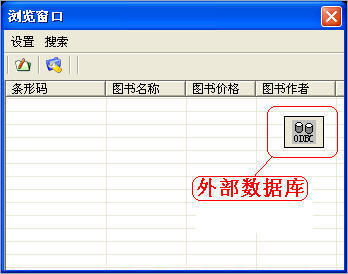
（图-1）
按照（图-2）所示添加图书窗口及组件，添加和关闭按钮是超级按钮，其他都是普通组件。
（图-2）
按照（图-3）所示查找图书窗口及组件，编辑框为普通编辑框，后面是普通标签，表格是用超级列表框控件。
（图-3）
（2）添加新品具体执行流程及实现代码
按照（图-4）所示鼠标单击浏览窗口上的添加按钮或点击设置里面的添加。
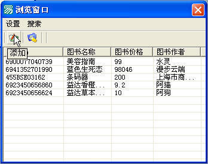
（图-4）
按照（图-5）所示单击添加按钮这样这本书就被加到数据库中了（本例程所使用的是Access数据库）。
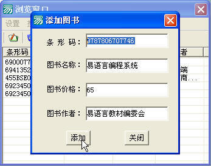
（图-5）
插入数据具体实现代码，如（图-6）。
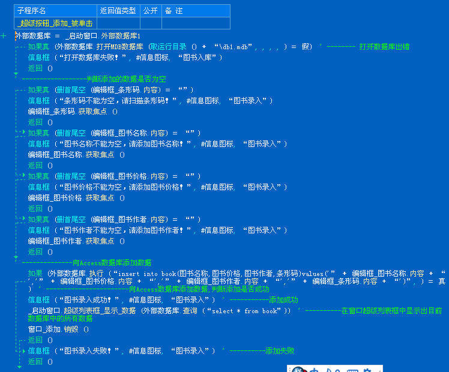
（图-6）
执行完毕后数据自动加入数据库并且在浏览窗口可以看到刚添加的数据，关联详细信息 ，如（图-7）。
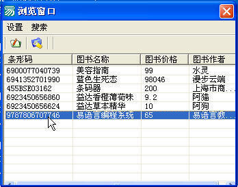
（图-7）
（3）查找商品界面以及实现代码。
按照（图-8）所示鼠标单击浏览窗口上的查找按钮或点击搜索里面的查找。
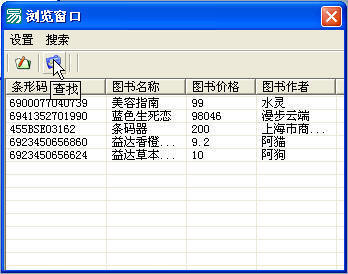
（图-8）
单击查找后，查找窗口弹出来，如（图-9）。
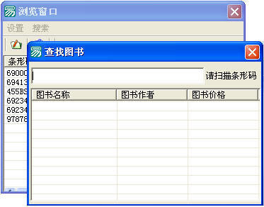
（图-9）
此时用条码器扫描要查找商品的条码 ，如（图-10）。

（图-10）
扫描后该商品的条形码自动在编辑框内生成，并从数据库中查找是否有改商品，有的话会在下面的超级列表框里面体现出该商品的一些资料。如（图-11），如果没有该商品会弹出一个信息框提示“没有符合你查找的信息”，如（图-12）。
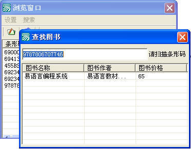
（图-11）
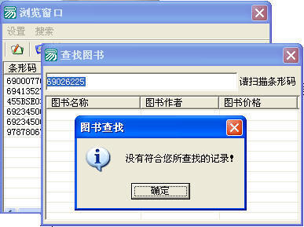
（图-12）
以下代码是用扫描进去的条码查询是否有该数据 ，如（图-13）。
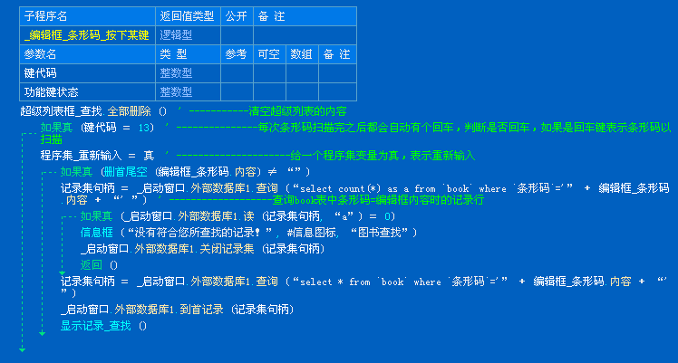
（图-13）
以下代码是从数据库里面把查找到的信息显示到超级列表框，如（图-14）。
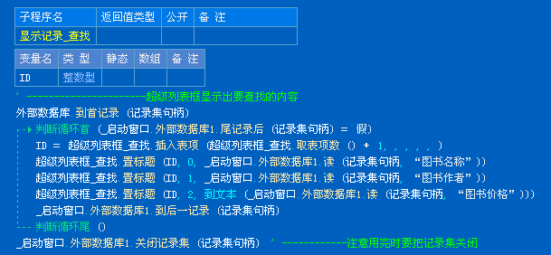
（图-14）
下面的代码主要功能是在查找界面第二次扫描商品时先把编辑框以前的信息给清除后再从新输入下一个要查询的条形码，如（图-15）。
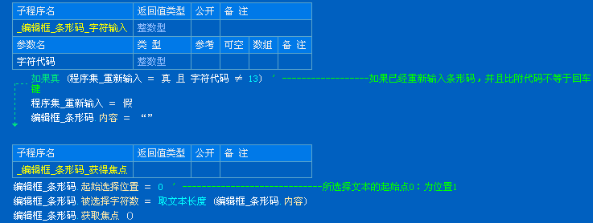
（图-15）
以下是数据库里面的具体信息，如（图-16）。
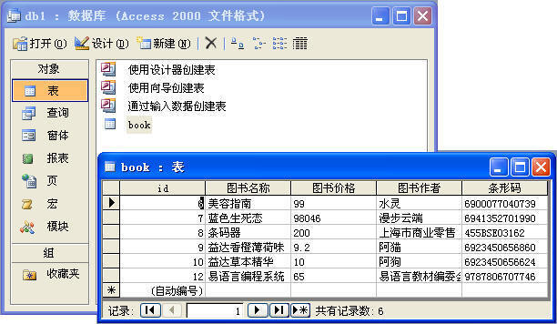
（图-16）
|
版权所有 大连大有吴涛易语言软件开发有限公司 电话:86-0411-88995831 传真:86-0411-88995834 |